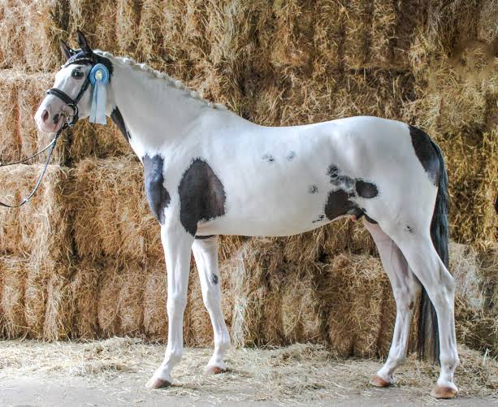
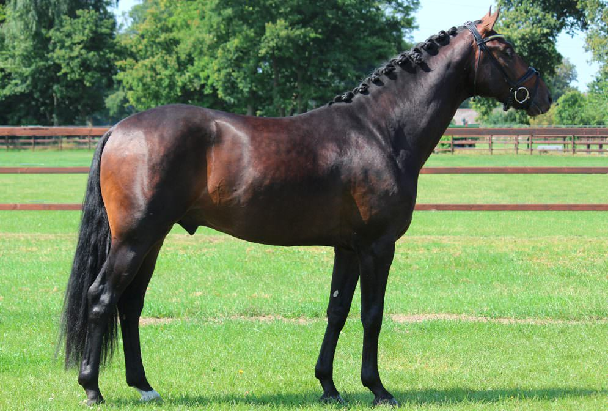
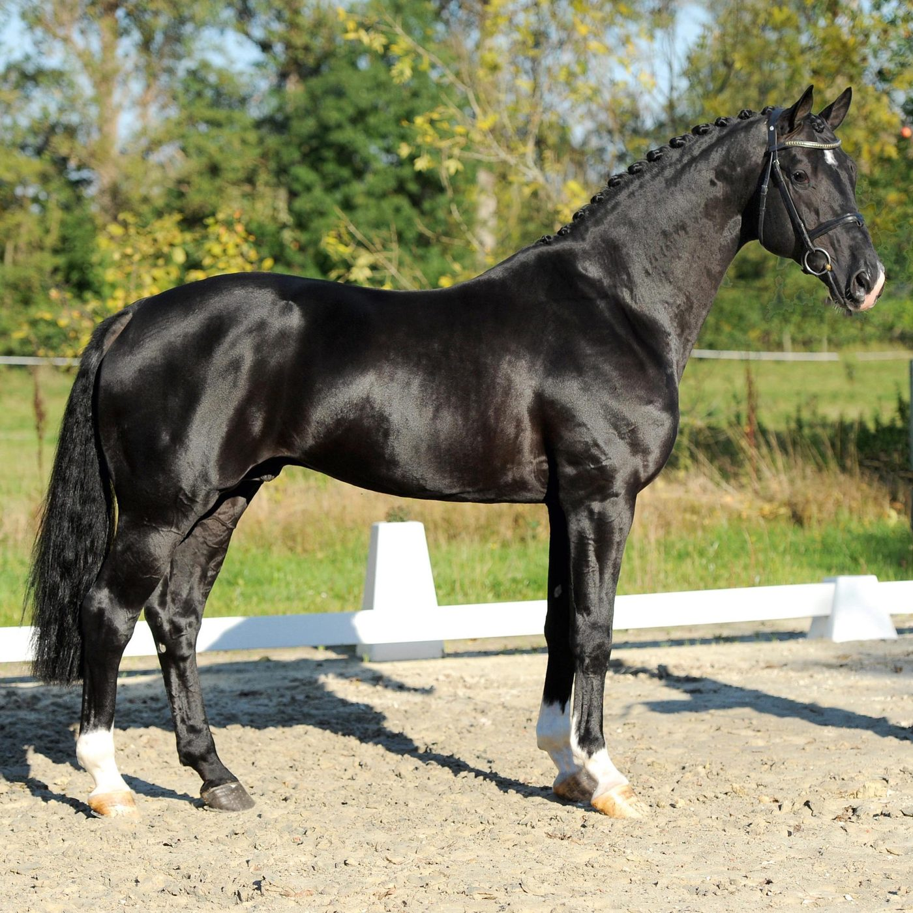
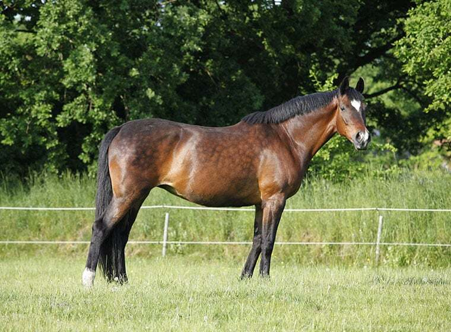
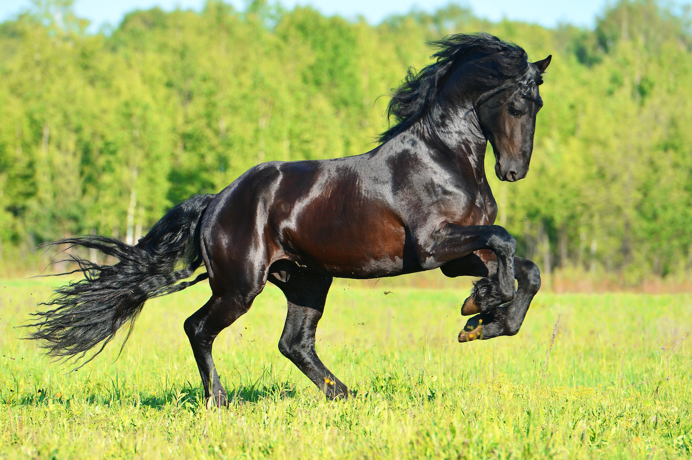
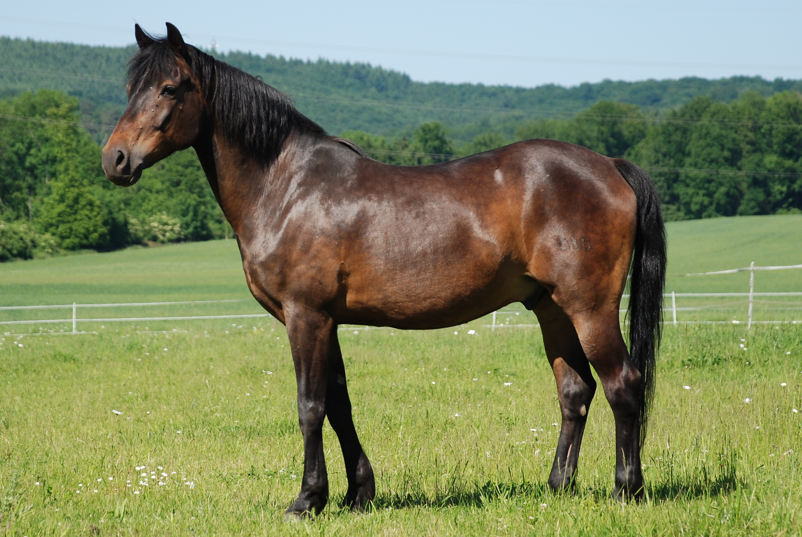
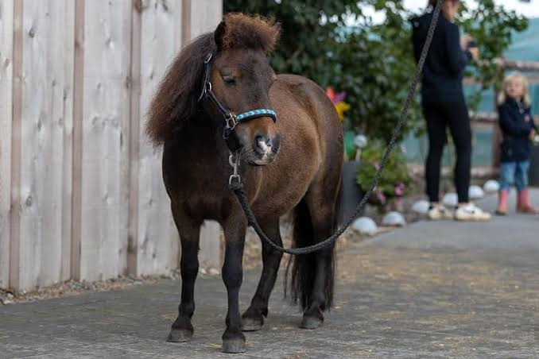

Wir Züchten am meisten schecken Trakener. Jedes Jahr machen wir auch bei den Fohlen des Zuchtbezirks mit. Bei uns haben auch schon die ein oder anderen gewonnen und zum Beispiel ist unser Spekulatius das Fohlenfrühling 2026.

Trakehner sind elegante, leistungsbereite und sehr menschenbezogene Warmblutpferde. Sie zeichnen sich durch ihren edlen Körperbau, ihre ausdrucksvollen Bewegungen und ihre hohe Ausdauer aus. Ihr Charakter gilt als intelligent, sensibel und lernwillig, weshalb sie eine enge Bindung zu ihrem Reiter aufbauen. Gleichzeitig besitzen sie Temperament und einen starken Willen, was eine einfühlsame und konsequente Ausbildung erfordert. Als älteste deutsche Reitpferderasse überzeugen Trakehner durch ihre Vielseitigkeit. Sie werden erfolgreich im Dressur-, Spring- und Vielseitigkeitssport eingesetzt. Dank ihrer Leistungsbereitschaft, Ausdauer und Eleganz eignen sie sich sowohl für den anspruchsvollen Turniersport als auch für ambitionierte Freizeitreiter. Ihre Kombination aus Athletik, Intelligenz und Treue macht sie zu einer der angesehensten Pferderassen der Welt.

Oldenburger sind elegante, kräftige und vielseitige deutsche Warmblutpferde. Sie besitzen einen harmonischen, athletischen Körperbau mit kräftiger Muskulatur, einen edlen Kopf und lange, leistungsfähige Beine. Die Rasse kommt in allen Grundfarben vor und vereint Kraft, Eleganz und Bewegungsqualität. Charakterlich gelten Oldenburger als ruhig, nervenstark, freundlich und menschenbezogen. Sie sind lernwillig, zuverlässig und arbeiten gerne mit ihrem Reiter zusammen. Durch ihr ausgeglichenes Wesen eignen sie sich sowohl für erfahrene Reiter als auch für ambitionierte Freizeitreiter. Besonders geschätzt werden ihre taktklaren, schwungvollen und ausdrucksstarken Bewegungen. Dadurch sind sie hervorragend für den Dressursport geeignet, überzeugen aber auch im Springen, in der Vielseitigkeit und im gehobenen Freizeitbereich. Dank ihrer Leistungsbereitschaft, ihres Talents und ihres ausgeglichenen Charakters gehören Oldenburger zu den erfolgreichsten und beliebtesten Sportpferderassen der Welt.

Hannoveraner sind edle, athletische und leistungsstarke Warmblutpferde, die zu den bekanntesten Sportpferderassen der Welt gehören. Sie besitzen einen kräftigen, harmonischen Körperbau, einen trockenen und ausdrucksvollen Kopf, einen langen Hals sowie starke Beine. Besonders auffällig sind ihre schwungvollen, raumgreifenden und elastischen Bewegungen, die ihnen eine elegante Erscheinung verleihen. Im Charakter gelten Hannoveraner als freundlich, zuverlässig und nervenstark. Sie sind ausgeglichen, lernwillig und arbeiten motiviert mit ihrem Reiter zusammen. Durch ihr angenehmes Temperament eignen sie sich sowohl für den ambitionierten Turniersport als auch für engagierte Freizeitreiter. Dank ihrer hohen Leistungsbereitschaft, ihrer Athletik und ihrer vielseitigen Talente sind Hannoveraner besonders erfolgreich in der Dressur, im Springen und in der Vielseitigkeit. Ihre Kombination aus Kraft, Eleganz und Charakter macht sie zu einer der beliebtesten und erfolgreichsten Sportpferderassen weltweit.

Holsteiner sind elegante, leistungsstarke und vielseitige Warmblutpferde, die ursprünglich aus Schleswig-Holstein stammen. Sie besitzen einen kräftigen, harmonischen Körperbau mit edlem Kopf, langem Hals und einer gut ausgeprägten Muskulatur. Durch ihre Größe, ihre Ausstrahlung und ihre athletische Erscheinung zählen sie zu den bekanntesten Sportpferderassen der Welt. Charakterlich gelten Holsteiner als intelligent, mutig und zuverlässig. Sie sind leistungsbereit, lernfähig und zeigen eine enge Bindung zu ihren Reitern. Gleichzeitig verfügen sie über ein ausgeglichenes Temperament, das sie sowohl für ambitionierte Sportreiter als auch für erfahrene Freizeitreiter interessant macht. Besonders bekannt sind Holsteiner für ihre hervorragenden Fähigkeiten im Springsport, wo sie durch Kraft, Schnelligkeit und großes Sprungvermögen überzeugen. Auch in der Dressur und Vielseitigkeit erzielen sie regelmäßig erfolgreiche Ergebnisse. Ihre Kombination aus Stärke, Eleganz, Leistungsbereitschaft und gutem Charakter macht die Holsteiner zu einer der erfolgreichsten und beliebtesten Pferderassen im internationalen Reitsport.

Friesen sind elegante, kraftvolle und ausdrucksstarke Pferde, die ursprünglich aus der niederländischen Provinz Friesland stammen. Sie besitzen einen harmonischen Körperbau mit kräftiger Muskulatur, einem edlen Kopf und einer hoch getragenen, geschwungenen Halsung. Besonders auffällig sind ihre meist tiefschwarze Fellfarbe, die lange, wallende Mähne sowie der üppige Schweif und Behang an den Beinen. Charakterlich gelten Friesen als freundlich, menschenbezogen und zuverlässig. Sie sind lernwillig, aufmerksam und verfügen über ein ausgeglichenes Temperament, wodurch sie sowohl bei Freizeitreitern als auch im sportlichen Bereich geschätzt werden. Gleichzeitig zeigen sie eine hohe Arbeitsbereitschaft und eine enge Bindung zu ihrem Menschen. Durch ihre raumgreifenden, ausdrucksstarken Bewegungen eignen sich Friesen besonders für die Dressur, das Fahren und verschiedene Show- und Freizeitdisziplinen. Ihre Kombination aus Eleganz, Stärke und gutem Charakter macht sie zu einer der beliebtesten und beeindruckendsten Pferderassen Europas.

Deutsches Reitpony sind vielseitige, elegante und leistungsstarke Ponys, die speziell als Sport- und Freizeitpartner gezüchtet wurden. Sie besitzen einen harmonischen, sportlichen Körperbau mit edlem Kopf, langem Hals und gut bemuskeltem Rücken. Trotz ihrer Ponygröße wirken sie oft wie kleine Warmblutpferde und überzeugen durch ihre ansprechende Ausstrahlung. Charakterlich gelten Deutsche Reitponys als freundlich, intelligent und menschenbezogen. Sie sind lernwillig, zuverlässig und besitzen ein ausgeglichenes Temperament, wodurch sie besonders bei Kindern und Jugendlichen beliebt sind. Gleichzeitig zeigen sie viel Leistungsbereitschaft und Freude an der Arbeit. Durch ihre schwungvollen Bewegungen, ihre Athletik und ihre Vielseitigkeit eignen sich Deutsche Reitponys hervorragend für Dressur, Springen und Vielseitigkeit. Sie sind sowohl im Turniersport als auch im Freizeitbereich erfolgreiche und treue Partner. Ihre Kombination aus Eleganz, Leistungsfähigkeit und gutem Charakter macht sie zu einer der beliebtesten Ponyrassen Europas.

Shetlandponys sind kleine, robuste und widerstandsfähige Ponys, die ursprünglich von den Shetlandinseln in Schottland stammen. Sie besitzen einen kompakten, kräftigen Körperbau mit starken Beinen, harten Hufen und einem dichten Fell, das sie vor Kälte und schlechtem Wetter schützt. Trotz ihrer geringen Größe sind sie außergewöhnlich stark und belastbar. Charakterlich gelten Shetlandponys als intelligent, neugierig und selbstbewusst. Sie sind lernfähig, freundlich und oft sehr menschenbezogen, können aber auch einen eigenen Kopf haben und benötigen daher eine konsequente Erziehung. Aufgrund ihres ausgeglichenen Wesens und ihrer Zuverlässigkeit sind sie besonders bei Kindern beliebt. Shetlandponys eignen sich sowohl als Reit- und Fahrponys als auch für Freizeitaktivitäten. Durch ihre Anpassungsfähigkeit, ihre Langlebigkeit und ihren charmanten Charakter zählen sie zu den beliebtesten Ponyrassen der Welt.